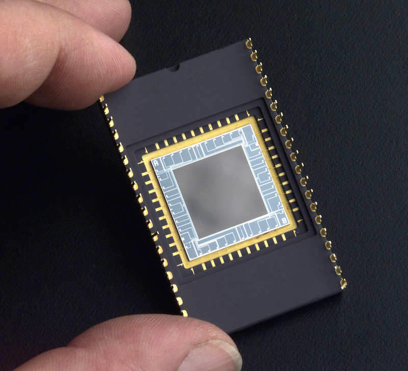
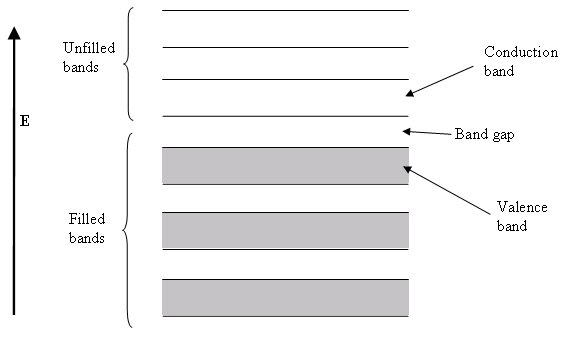
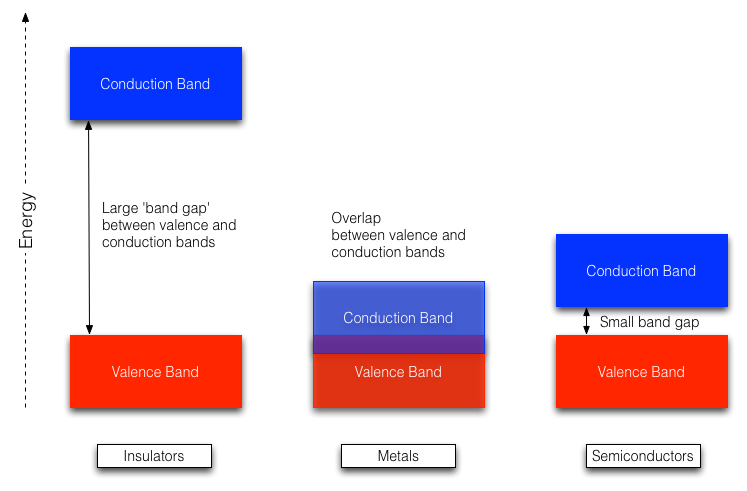

L06: Detectors CCDs
An astronomical detector is a device, typically located in the focal plane of a telescope or instrument, that has the ability to record the photons incident upon it. For imaging or spectroscopy, a detector composed of a two-dimensional array of pixels is essential. Detectors must not waste photons - astronomical objects are faint and millions of pounds are spent on large telescopes to collect as many photons as possible. Throughout history many astronomical detectors have been used; perhaps the most important were the human eye and photographic plates. In 1969, however, Willard Boyle and George Smith invented the charge-coupled device or CCD, a discovery for which they were awarded a share of the 2009 Nobel Prize in Physics. CCDs are small and incredibly efficient, detecting almost all photons incident upon them. Astronomers pioneered the use of CCDs in the 1970s and nowadays you would find it extremely difficult to find any other type of detector in use at a major telescope. For this reason, we shall concentrate exclusively on CCDs in this lecture.
CCDs are very complex electronic devices, and we shall discuss their operation in a simplified way. For the curious, much more detail on the operation and construction of CCDs is provided in Vik Dhillon's old notes.

Semi-conductors
CCDs work by making use of semiconductors; the most common semi-conductor used for CCDs is Silicon. We saw in PHY104 that the energy levels of electrons around single atoms were restricted to discrete energy levels. When isolated atoms are brought together to form a solid, they interact and their energy levels are spread into a large number of closely spaced levels, creating a series of bands, as shown in figure 69, below.
At temperatures of absolute zero, the highest energy band that contains electrons is called the valence band. Electrons in the valence band are unable to move between atoms in the solid, because nearly all the electron states at this energy are already occupied. The only way an electron can move, and thus conduct electricity is to gain energy. The electron then moves into the conduction band. Now there are unoccupied conduction band states available around nearby atoms and the electron can move through the solid.
The difference between insulators and metals is explained by the difference in energy between the valence band and the conduction band, known as the band gap. In insulators these are very far apart in energy. As a result, there are almost no electrons in the conduction band and the electrical conductivity is poor. In metals, the valence and conduction bands overlap. Even at low temperatures, thermal excitation is able to create many conduction band electrons which are free to move through the solid. Metals are good conductors of electricity. Somewhere in between are the semi-conductors. Semi-conductors have small band gaps. Thermal excitation of electrons into the conduction band is small (but not zero). However, in a semi-conductor, electrons can be promoted into the conduction band by the absorption of energy from a photon. It is this property that allows semi-conductors to be used in CCDs as photon detectors.


CCDs: Principles
All CCDs work via the same basic process. Photons excite electrons into the conduction band. These electrons are free to move through the CCD, and so can be moved to some readout electronics, where we count the number of electrons which have been excited. The number of electrons we count is proportional to the number of photons arriving at the detector. CCDs thus have to perform four jobs:
- they must create photo-electrons;
- they must store photo-electrons in pixels during an exposure;
- they must move the photo-electrons to the readout electronics;
- they must count the number of photo-electrons created in each pixel.
Quantum Efficiency
The semi-conductor of choice for CCDs is silicon. It has a large band gap, reducing the importance of thermal excitation. Electrons that are elevated to the conduction band via the absorption of a photon are known as photo-electrons. Not all photons will produce photo-electrons, however. The band gap of Silicon is 1.26 eV. Photons with a lower energy, \(E=h\nu < 1.26\) eV will not create photo-electrons. This means that CCDs based on Silicon can only detect photons with wavelengths shorter than \(\lambda=1100\) nm. Photons with higher energies, e.g. optical photons, can of course produce photo-electrons, but not all do.
The quantum efficiency (QE) of a detector is the fraction of incident photons which produce photo-electrons. Through clever design, the QE of CCDs can reach 90% at optical wavelengths. For comparison, the quantum efficiency of photographic film is around 10%, making it easy to see why CCDs have become the dominant detector in optical astronomy.
Charge Coupling
How are the photo-electrons kept within a pixel during the exposure, and how are they moved to the readout electronics at the end of an exposure? The unique feature of CCDs, which give them their name, is the way photo-electrons are moved from the pixel in which they were created - a process known as charge-coupling.
Once the CCD has been exposed to light for the required amount of time, each pixel will contain a charge packet of size proportional to the number of incident photons. To measure this charge, it is necessary to move these charge packets, one by one, off the chip. The easiest way of visualizing this process is by thinking of taking a CCD image as analogous to measuring the rain falling on a field, as shown in figure 70. The first step is to distribute a large number of buckets in a rectangular pattern of rows and columns over the field - these are the pixels. After it has stopped raining, you can measure the amount of water collected in each bucket, i.e. the amount of charge in each pixel, by shifting the entire array of buckets, one row at a time, on parallel conveyor belts towards a perpendicular conveyor belt at one end of the field. When a single row has been transferred onto the conveyor belt at the end of the field, the row is shifted, one bucket at a time, towards a measuring point at the end of this conveyor belt, where the amount of water in each bucket is recorded. Once the whole row has been measured, the next row is shifted onto the conveyor belt at the end of the field, and the process is repeated until every bucket in the field has been measured. By plotting the amount of rain in each bucket as a two-dimensional grey-scale image, where white represents a full bucket and black an empty one, it is possible to visualise the pattern of rainfall over the field. Replacing the rain in this analogy by photons, this is how an image of the sky can be recorded.

How are the conveyor belts implemented electronically? In most CCDs, each pixel has three electrodes attached to it. A large positive voltage applied to one of these electrodes will attract the photo-electrons. We can also think of this voltage as creating a potential well which will fill with photo-electrons. This is the way CCDs keep photo-electrons in a single pixel during an exposure. The three electrodes are also used to move charge between pixels. The voltage in an electrode adjacent to the electrode holding the charge packet is raised to the same level. This allows the charge to flow, like water, and be shared between the two electrodes. Decreasing the voltage of the original electrode then completes the transfer, pushing all of the charge across to the adjacent electrode, which is held at the higher voltage level. Since there are three electrodes in each pixel, three of the above transfers are required to move the charge packet by one pixel. The process of raising and lowering the voltages to move charge is known as clocking, and is illustrated in figure 71.

Figure 71: an animation showing the clocking of electrons in a CCD. By this process the photo-electrons are moved from one pixel to the next.
{kind=link}
Readout Electronics
Looking again at figure 70, we can see that rows of pixels are shifted consecutively onto a horizontal serial register, which moves the charge from each pixel, one-by-one into the readout electronics. The job of the readout electronics is to measure the amount of charge collected in each pixel. The readout electronics for a CCD are quite complex, but they all operate on the same basic principle. The charge from each pixel, \(Q\), is emptied into a capacitor of capacitance \(C\). This causes a small change in the voltage across the capacitor given by \(V = Q/C\). This analog voltage change can be measured. Finally, the voltage produced by each charge packet is digitized using an analogue-to-digital converter (ADC), producing the number of analogue-to-digital units (ADUs), or simply counts, in each pixel, which are then written to a computer disk.
Readout Noise
In an ideal world, every photon striking the CCD would produce one electron in a pixel, which would be measured as one count by the ADC. Of course, we do not live in an ideal world. The voltage on the capacitor in the readout electronics is around one microvolt for each electron in the pixel, and this voltage cannot be measured with perfect accuracy. This introduces a readout noise in the charge measured in every pixel. In a well designed CCD the readout noise can be as small as 3e- per pixel. This means that, even if every pixel in the CCD actually contained the same number electrons, the measured number of counts would vary by about 3e- from pixel to pixel. We will see later that this is quite important for observations of faint astronomical objects.
Well-depth and Dynamic Range
Each CCD pixel has a maximum charge carrying ability, known as the full-well capacity. Typically, the full-well capacity of a pixel is hundreds of thousands of electrons. If more electrons are created, they spill vertically into adjacent pixels (structures in the CCD, known as channel stops prevent horizontal leakage). This leakage of charge into adjacent pixels is known as blooming, and is shown in figure 72. The full well depth sets an upper limit to how many electrons can be detected by one pixel.
At the other end of the scale, the readout noise sets a lower limit to how many electrons each pixel can detect. With a readout noise of 3e-, how do you tell the difference between pixels which store 1, 2 or 3e-? The ratio of the full-well capacity to the readout noise is known as the dynamic range of the CCD, and is typically of order 100,000:1.
Analog-to-digital conversion and Gain
All data from CCDs are stored as digital numbers on a computer disc. That means the analog voltage must be converted to a digital number. Numbers are stored on computers using bits which can either be 0 or 1. A digital number is stored using a given number of bits, using the binary number system. Most high-quality CCDs use 16-bit ADCs.
Using one bit, we can represent two numbers - 0 and 1. Using 2 bits, four numbers (0, 1, 2 and 3) can be written. A 16-bit ADC can represent 216 different numbers, from 0 to 65,535. Each of these numbers is one ADU, or a count, so the ADC can represent values from 0 counts, to 65,535 counts. However, each count does not have to represent one electron. Instead, we are free to choose the relationship between ADU and e-s. This is controlled by a parameter known as the gain, often given in units of e-/ADU.
Choosing the correct gain is important. For example, suppose the readout noise in a CCD is 2e-. If we set the gain to 4e-/ADU then pixels containing 0, 1, 2 or 3 e-s will all be measured as 0 ADU. By choosing a gain of 4e-/ADU we have introduced a rounding error; we have effectively added more noise, known as quantization noise. If we use a lower gain of 1 e-/ADU, the noise on each pixel is set by the readout noise, which is desirable in astronomy when many pixels will record small numbers of photons.
Saturation
One consequence of using low gains to reduce quantization noise, however, is that the dynamic range of the CCD is defined not by the full-well capacity of a pixel but by the limits of the ADC. For example, a gain of 1.5 e-/ADU would mean that a 16-bit ADC is capable of counting 1.5 x 65535 = 98302 e- before running out of numbers to record higher pixel charges. We say that such a pixel is saturated. If the full-well capacity of the pixel is 200,000 e-, this means that the ADC would saturate well before the full-well capacity of the pixel is reached, i.e. the maximum number of electrons that can be counted is 98302, not 200,000. Obviously, a saturated pixel is not capable of accurately recording the amount of photons incident upon it.